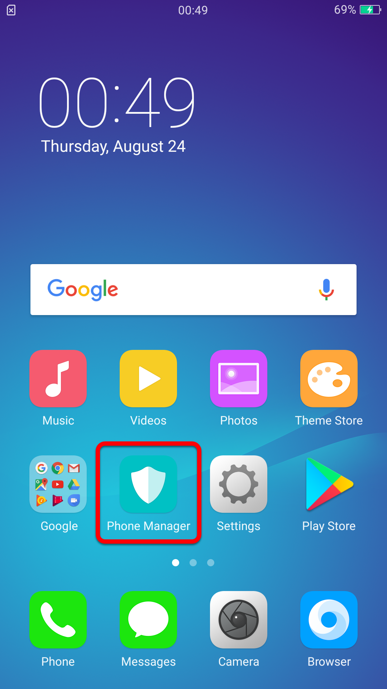
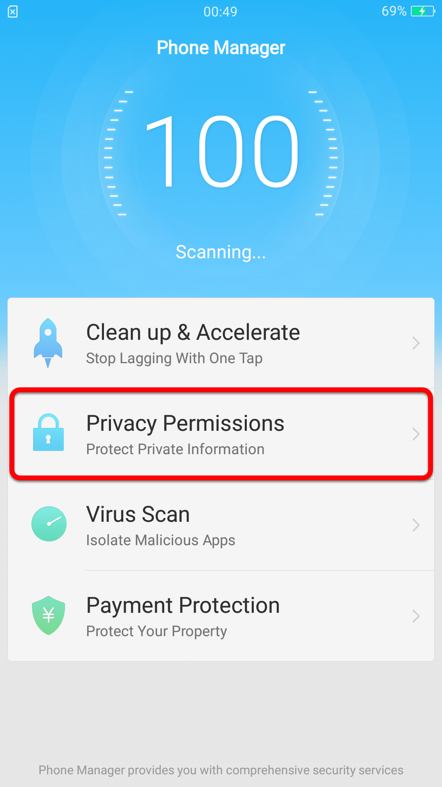
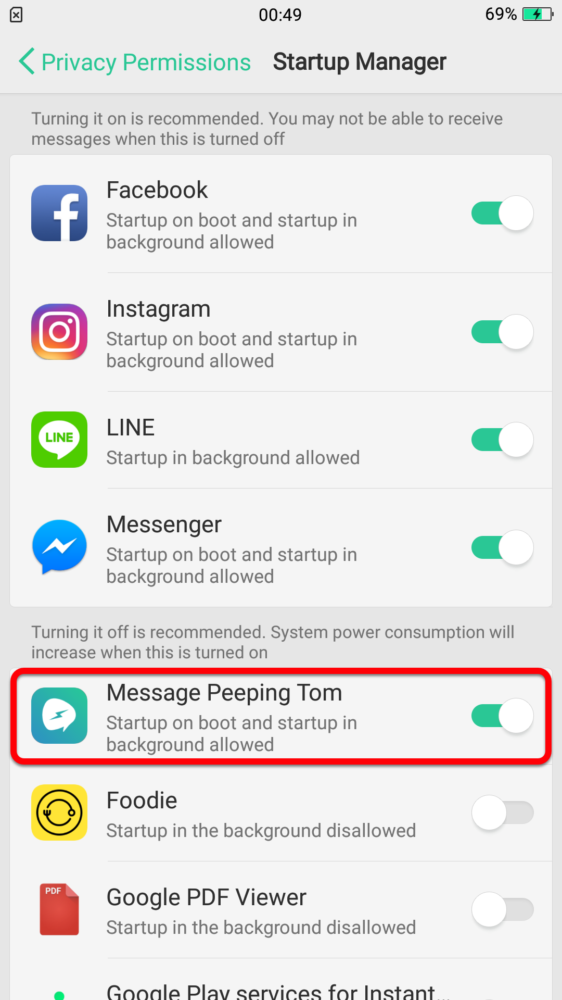

Step 1
Tap [Phone Manager] → Tap [ Privacy Permissions ] → Tap [ Startup manager ] → Find [ Message Peeping Tom ] and enable it



Because of the varying optimization software used by different brands, Message Peeping Tom may not work normally on all devices. Please take note of the following instructions and set your device accordingly.
Tap [Phone Manager] → Tap [ Privacy Permissions ] → Tap [ Startup manager ] → Find [ Message Peeping Tom ] and enable it
Go to [ Setting ] → Tap [ Battery ] → Tap [ Message Peeping Tom ] and setting like below
In Home Screen,Tap [ menu button ] in the lower left corner → Find [ Message Peeping Tom ] and tap lock button